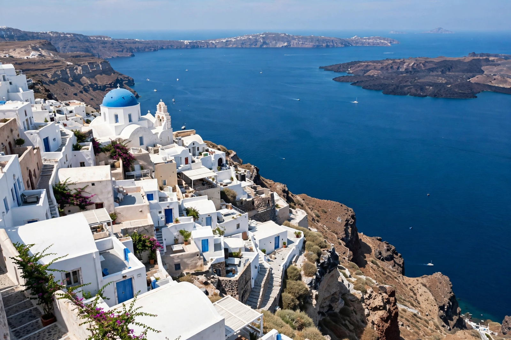

[Image placeholder: The caldera of Santorini in the Aegean]The **Aegean Sea** is an elongated embayment of the Mediterranean Sea between Europe and Asia, lying between the mainlands of Greece and Turkey. It is connected to the Black Sea through the Dardanelles, the Sea of Marmara and the Bosphorus, and to the Mediterranean proper to the south.
The Aegean is studded with some 2,000 islands — including the Cyclades, the Dodecanese, Crete, Lesbos and Rhodes — and was the cradle of the Cycladic and Minoan civilisations and of classical Greek maritime culture. Its name is traditionally linked to the mythical king Aegeus of Athens.
The sea covers roughly 214,000 km² and reaches depths around 3,500 m off eastern Crete. Summer is dominated by the etesian (meltemi) northerly winds. Most islands are Greek; Imbros (Gökçeada) and Tenedos (Bozcaada) belong to Turkey.
Greece and Turkey dispute aspects of Aegean sovereignty — territorial waters, airspace, continental shelf and the status of certain islets — a recurring source of tension that brought the two NATO allies close to conflict in 1987 and 1996.